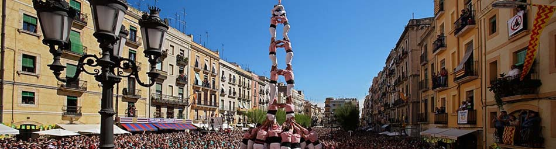

Getting to Tarragona

Located in the Mediterranean, in the centre of the Golden Coast, Tarragona is Catalonia’s southernmost capital city, at less than 100 km from Barcelona. Thanks to its privileged situation, the city has a mild and temperate climate all year long.
THE PALAU FIRAL I DE CONGRESSOS DE TARRAGONA
The congress centre and the exhibition centre are in the centre of the city. The location of these two buildings make possible an easy access from the railway station (at 100 m), from the port passengers terminal (at 200 m) and from the Rambla Nova (at 100 m), the lattest, the commercial centre of the city.|
TRANSPORT BY AIR From Barcelona or Reus Airports to Tarragona City Center there is a Bus Service available (see here) |
|
| TRANSPORT BY ROAD Tarragona has good bus services (EMT). From the bus station, at few metres from the Rambla Nova, it is possible to go to other coastal towns such as La Pineda, Cambrils, Vila-seca i Salou. Excel·lent infraestructure of motorways: A-16: Barcelona - Tarragona AP-7: València - Tarragona - Barcelona A2: Madrid - Saragossa - Lleida - Tarragona |
|
|
TRANSPORT BY TRAIN * The Spanish railway company (RENFE) offers an interesting 30% prize reduction to travel to Tarragona by train for the MFS2013 Congress. Those interested in such reduction should fill the following document (click here to dowload) and buy the tickets at railway stations or travel agencies. |